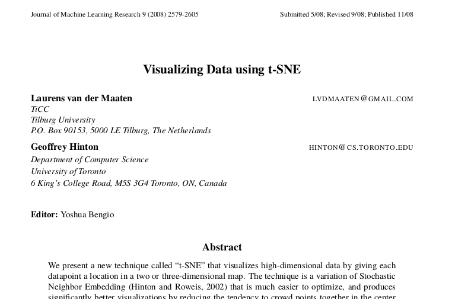
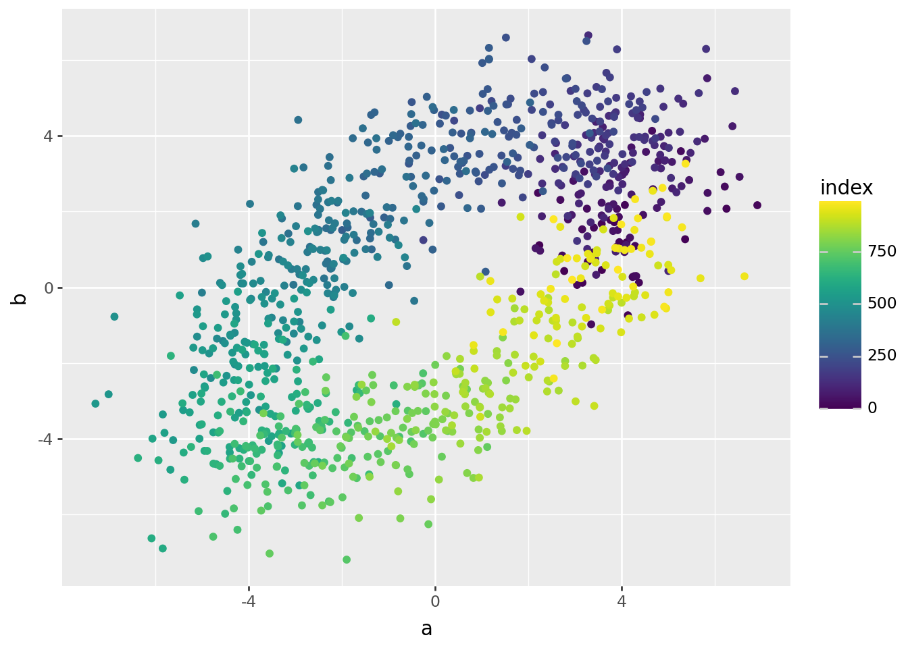
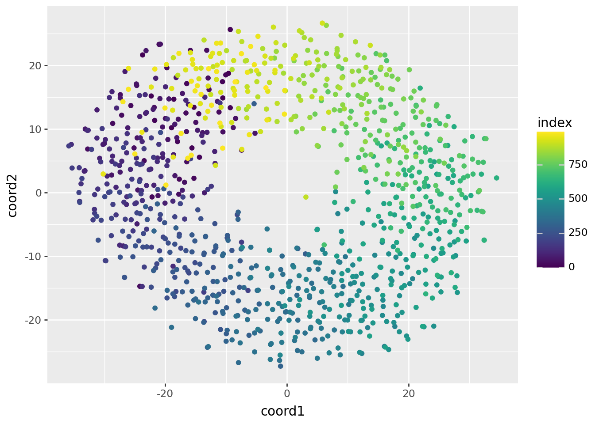
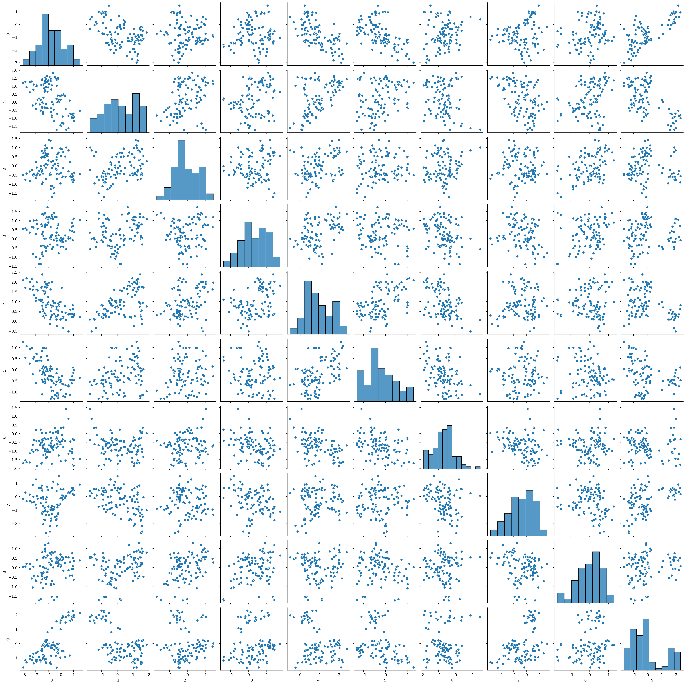
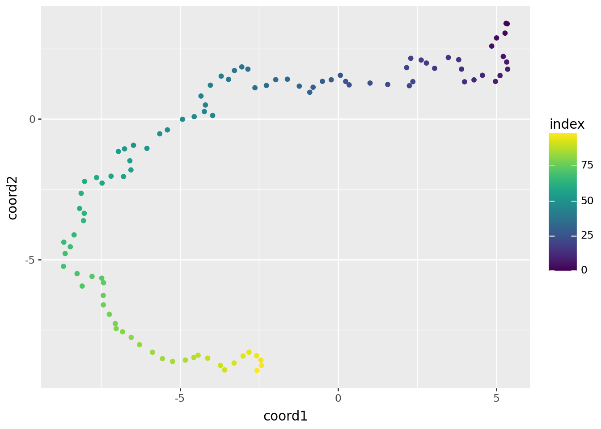

import numpy as np
import pandas as pd
import plotnine as p9
import seaborn as sns
import scipy
import scipy.optimize
rng = np.random.default_rng(seed=123)Dimension reduction: t-SNE
t-SNE
t-SNE

t-SNE is a new-er-than-PCA method for dimension reduction (visualization of struture in high-dimensional data).
You can think about this as a lengthy exercise in “let’s dissect a sophisticated loss function for dimension reduction”.
It makes very nice visualizations.
The generic idea is to find a low dimensional representation (i.e., a picture) in which proximity of points reflects similarity of the corresponding (high dimensional) observations.
Suppose we have \(n\) data points, \(x_1, \ldots, x_n\) and each one has \(p\) variables: \(x_1 = (x_{11}, \ldots, x_{1p})\).
For each, we want to find a low-dimensional point \(y\): \[\begin{aligned} x_i \mapsto y_i \end{aligned}\] similarity of \(x_i\) and \(x_j\) is (somehow) reflected by proximity of \(y_i\) and \(y_j\)
We need to define:
- “low dimension” (usually, \(k=2\) or \(3\))
- “similarity” of \(x_i\) and \(x_j\)
- “reflected by proximity” of \(y_i\) and \(y_j\)
Similarity
To measure similarity, we just use (Euclidean) distance: \[\begin{aligned} d(x_i, x_j) = \sqrt{\sum_{\ell=1}^n (x_{i\ell} - x_{j\ell})^2} , \end{aligned}\] after first normalizing variables to vary on comparable scales.
Proximity
A natural choice is to require distances in the new space (\(d(y_i, y_j)\)) to be as close as possible to distances in the original space (\(d(x_i, x_j)\)).
That’s a pairwise condition. t-SNE instead tries to measure how faithfully relative distances are represented in each point’s neighborhood.
Neighborhoods
For each data point \(x_i\), define \[\begin{aligned} p_{ij} = \frac{ e^{-d(x_i, x_j)^2 / (2\sigma^2)} }{ \sum_{\ell \neq i} e^{-d(x_i, x_\ell)^2 / (2 \sigma^2)} } , \end{aligned}\] and \(p_{ii} = 0\).
This is the probability that point \(i\) would pick point \(j\) as a neighbor if these are chosen according to the Gaussian density centered at \(x_i\).
Exercise:
- Draw 9 points in a 10m x 10m square. Label the points 1 to 9.
- Draw another square, and try to draw the points 1 to 9 in that one so that the neighborhood of point
1is similar to the first picture, but the neighborhood of point9is not.
Reminder: the “neighborhood” is defined by relative distances: for point \(i\) it is \[\begin{aligned} p_{ij} = \frac{ e^{-d(x_i, x_j)^2 / (2\sigma^2)} }{ \sum_{\ell \neq i} e^{-d(x_i, x_\ell)^2 / (2 \sigma^2)} } , \end{aligned}\] and \(p_{ii} = 0\).
Similarly, in the output space, define \[\begin{aligned} q_{ij} = \frac{ (1 + d(y_i, y_j)^2)^{-1} }{ \sum_{\ell \neq i} (1 + d(y_i, y_\ell)^2)^{-1} } \end{aligned}\] and \(q_{ii} = 0\).
This is the probability that point \(i\) would pick point \(j\) as a neighbor if these are chosen according to the Cauchy centered at \(x_i\).
Similiarity of neighborhoods
We want neighborhoods to look similar, i.e., choose \(y\) so that \(q\) looks like \(p\).
To do this, we minimize \[\begin{aligned} \text{KL}(p \;|\; q) &= \sum_{i} \sum_{j} p_{ij} \log\left(\frac{p_{ij}}{q_{ij}}\right) . \end{aligned}\]
What’s KL()?
Kullback-Leibler divergence
\[\begin{aligned} \text{KL}(p \;|\; q) &= \sum_{i} \sum_{j} p_{ij} \log\left(\frac{p_{ij}}{q_{ij}}\right) . \end{aligned}\]
This is the average log-likelihood ratio between \(p\) and \(q\) for a single observation drawn from \(p\).
It is a measure of how “surprised” you would be by a sequence of samples from \(p\) that you think should be coming from \(q\).
Facts:
\(\text{KL}(p \;|\; q) \ge 0\)
\(\text{KL}(p \;|\; q) = 0\) only if \(p_i = q_i\) for all \(i\).
Simulate data
set-up
A high-dimensional donut
Let’s first make some data. This will be some points distributed around a ellipse in \(n\) dimensions.
n = 20
npts = 1000
xy = rng.normal(size=n*npts).reshape((npts, n))
theta = rng.uniform(size=npts) * 2 * np.pi
theta.sort()
ab = rng.normal(size=2*n).reshape((2, n))
ab[:,1] = ab[:,1] - ab[:,0] * np.sum(ab[:,0] * ab[:,1]) / np.sqrt(np.sum(ab[:,1]**2))
ab /= np.sqrt(np.sum(ab**2, axis=1))[:,np.newaxis]
for k in range(npts):
dxy = 4 * np.array([np.cos(theta[k]), np.sin(theta[k])]).dot(ab)
xy[k,:] += dxyHere’s what the data look like:
sns.pairplot(pd.DataFrame(xy))
But there is hidden, two-dimensional structure:
(
pd.DataFrame(xy.dot(ab.T), columns=('a', 'b')).reset_index()
>>
p9.ggplot(p9.aes(x='a', y='b', color='index')) + p9.geom_point()
)
Implementation
The quantity to be minimized is Kullback-Leibler distance between \(p\) and \(q\), defined as \[\begin{aligned} \text{KL}(p|q) &= \sum_x p_x \log(p_x/q_x) . \end{aligned}\]
Summary (\(t\)-SNE):
Given data \(\{ x_i \in \mathbb{R}^n \}\), find locations \(\{ y_i \in \mathbb{R}^k \}\) to minimize \[\begin{aligned} \sum_{ij} p_{ij} \log(p_{ij} / q_{ij}) , \end{aligned}\] where \(p_{ij} \propto e^{-d_{ij}^2/\sigma^2}\) and \(q_{ij} \propto 1/(1 + d_{ij}^2)\), and rows in \(p\) and \(q\) are normalized to sum to 1.
Observation: you could implement \(t\)-SNE, with that description.
Let’s lean on skelearn instead:
import sklearn.manifold
tsne = sklearn.manifold.TSNE(n_components=2).fit_transform(xy)It works!
(
pd.DataFrame(tsne, columns=["coord1", "coord2"]).reset_index()
>>
p9.ggplot(p9.aes(x="coord1", y="coord2", color='index'))
+ p9.geom_point()
)
Another case
High-dimensional random walk
n = 40
npts = 100
rw = rng.normal(size=n*npts).reshape((npts, n))
for i in range(1, npts):
rw[i,:] = np.sqrt(.9) * rw[i-1,:] + np.sqrt(.1) * rw[i,:]sns.pairplot(pd.DataFrame(rw[:,:10]))
Run again
rw_tsne = sklearn.manifold.TSNE(n_components=2).fit_transform(rw)It works!
(
pd.DataFrame(rw_tsne, columns=["coord1", "coord2"]).reset_index()
>>
p9.ggplot(p9.aes(x="coord1", y="coord2", color='index'))
+ p9.geom_point()
)